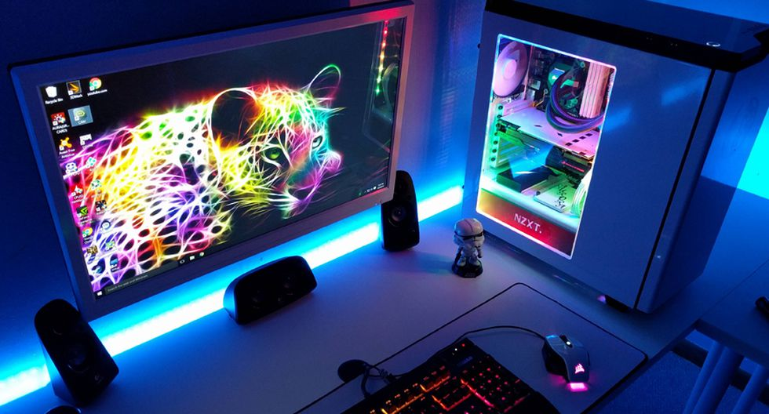

INTRODUCCION
Lo que se mostrará en esta página será como armar una buena PC Gamer con componentes
económicos, pero de buena calidad si tus recursos económicos son limitados en cambio sí cuentas con el capital o te sobra
guiarte para seleccionar los mejores componentes y armarte una PC más potente, esto con el propósito de ahorrarle dinero a
los jóvenes que buscan divertirse sin que su computadora no les pueda correr o les dé tirones el videojuego que desean probar
al igual que puedan tener una experiencia digna de un gamer con unos gráficos que no sean de, como coloquialmente se les dice,
de cartón. |

|
| Este contenido estará dirigido en especial a los Jóvenes y Adolescentes ya que
los videojuegos están centrados más para este tipo de público, pero no por ser jóvenes les daremos información falsa o de dudosa
procedencia así que se le dejara las fuentes bibliográficas al final de cada página, estas fuentes de información abarcaran
páginas de componentes computacionales, consultare a expertos en materia computacional y se analizara lo que ofrece cada componente. |
DATO GLOBITO
Montar un PC gaming es la mejor opción para rentabilizar al máximo la inversión,
adecuar el equipo a nuestras necesidades y lograr un ordenador que no quede totalmente
obsoleto con los nuevos avances tecnológicos. |